Pokémon Black and White are seen as some of the greatest Pokémon games for their story telling and characters, but just how different is it to other languages? During the translation progress, some things could get misinterpreted or said in a different way, so we decided to take a look at the game's scripts in other languages and compare how well the translations were handled.
While an official German version of the game has been released for the public to play and enjoy, we ran into an issue, how were we supposed to get the Arabic version if an official game in Arabic doesn't exsist? We looked through mutliple translation sites and found out that translating the documents using spaCy was easy for the English and German, but Arabic had us using CAMeL Tools, specifically built for Arabic NLP.
Defining reusable functions for reading files and extracting adjectives was done so repeating the same code wasn't necessary.
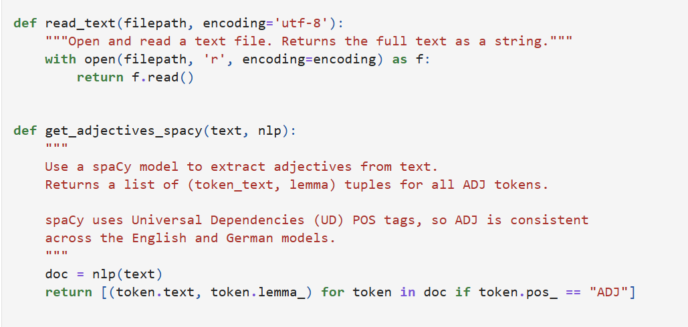
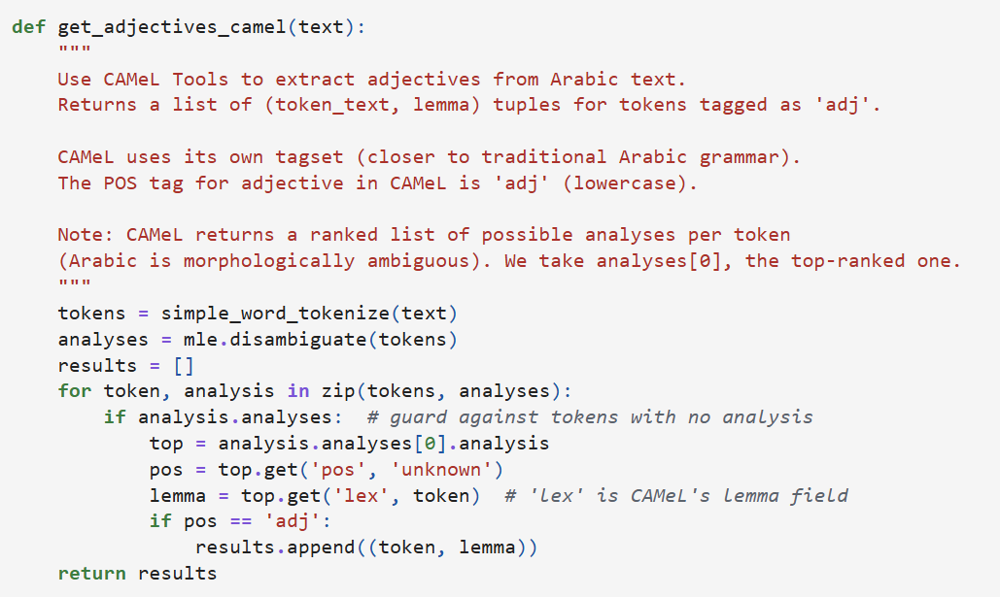
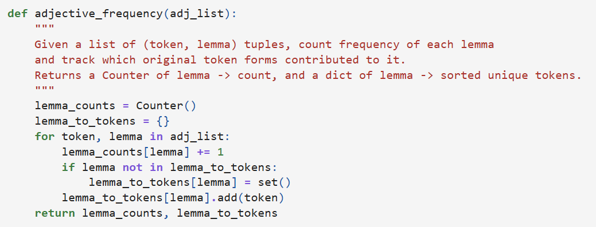
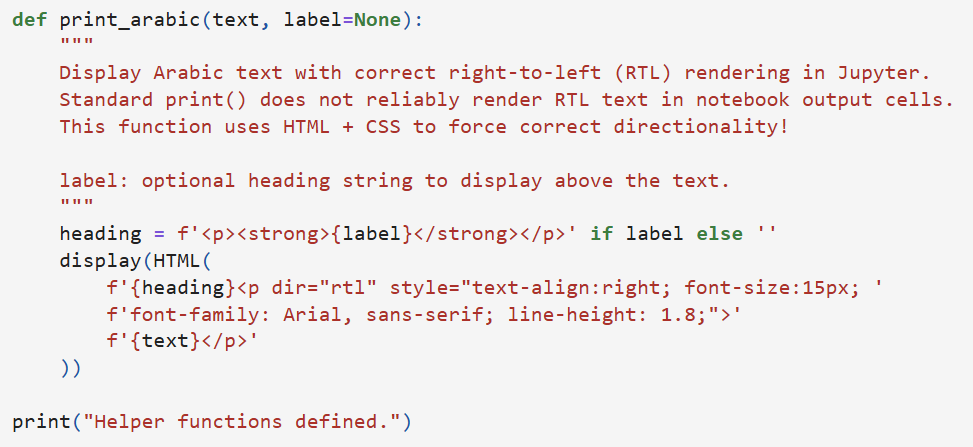
The files were then checked to make sure none of the files were loaded incorrectly. Once the files were confirmed, we could begin to count the lemma adjectives from each text to get some statistics to use for the files.
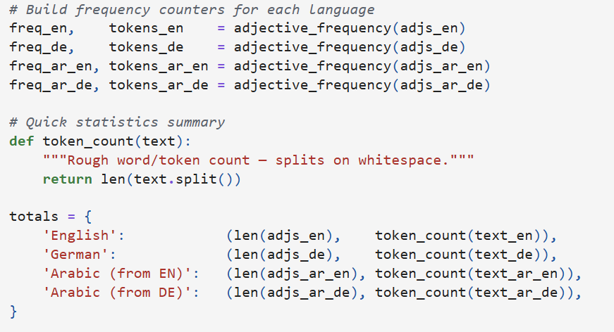
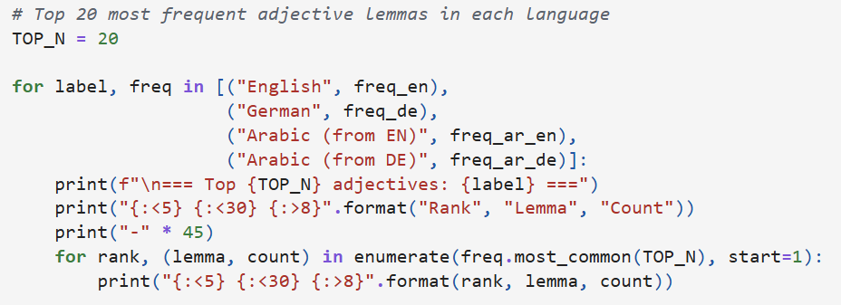
Confirming that everything worked out to display the top 20 adjectives, the number can be increased to look at more and written into a TSV file for comparisons to begin.
Now that TSV files have been made to better read the adjectives, using AntConc can give a better spread of which words are said and how many are tied to those words. AntConc could show how it was reading the adjectives, which ended up being slightly different with the English and German translations as AntConc was reading the "Text File" labels that were still attatched to the files while the Arabic translations were able to filter those out. However, this issue didn't appear when the N-Gram reading was set to 1 rather than anything higher.
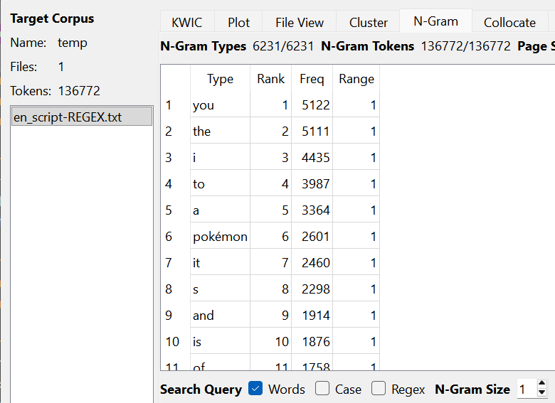
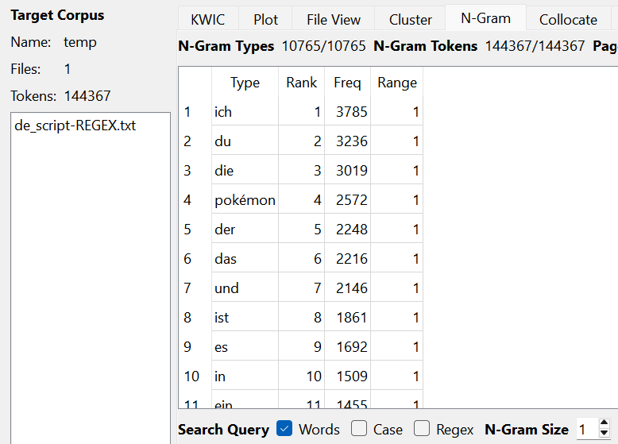
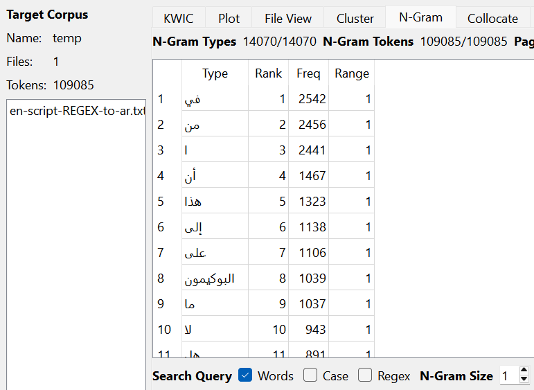
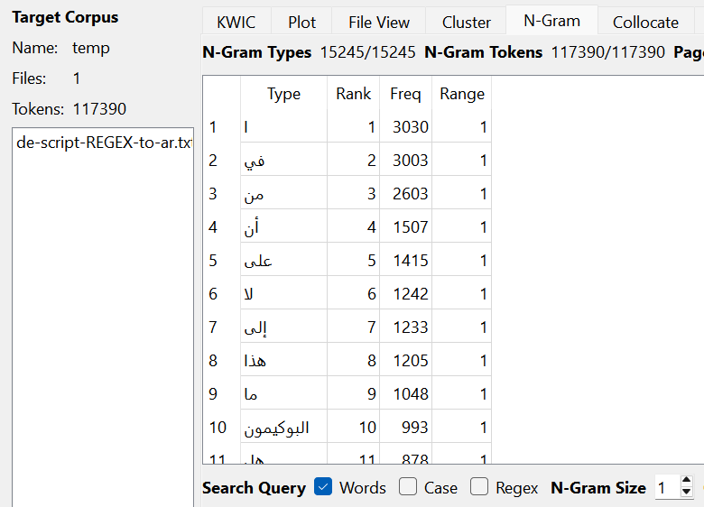
Looking at the token count, the translated versions with Arabic are significantly lower than the English and German translations
Now that we have all the translations and adjectives displayed, we need to take a closer look at what exactly we are reading here. The Jupyter Notebook has a bit of dfferent results with the token count, where the English and Arabic have close token counts, while the German has significantly less, but the German to Arabic has the most out of all tokens.
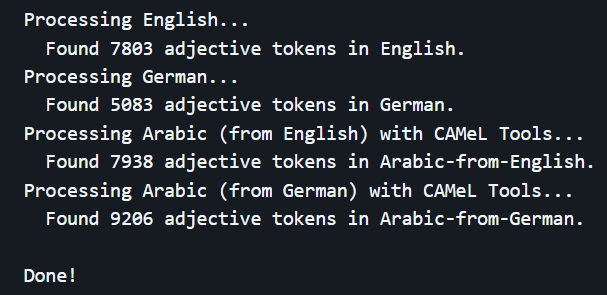